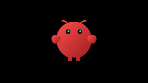
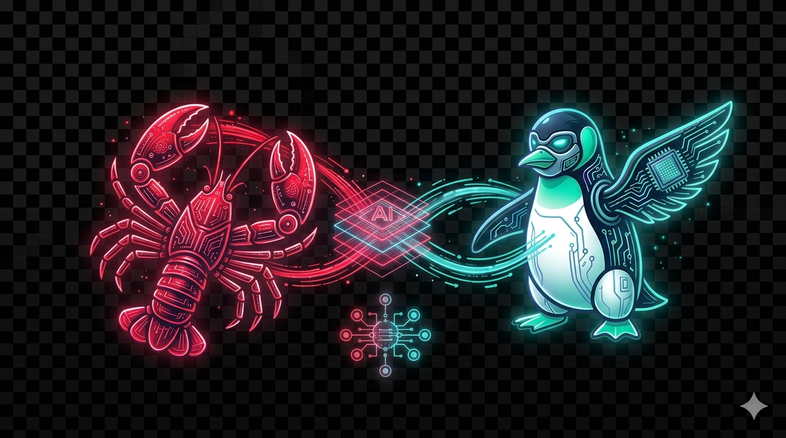
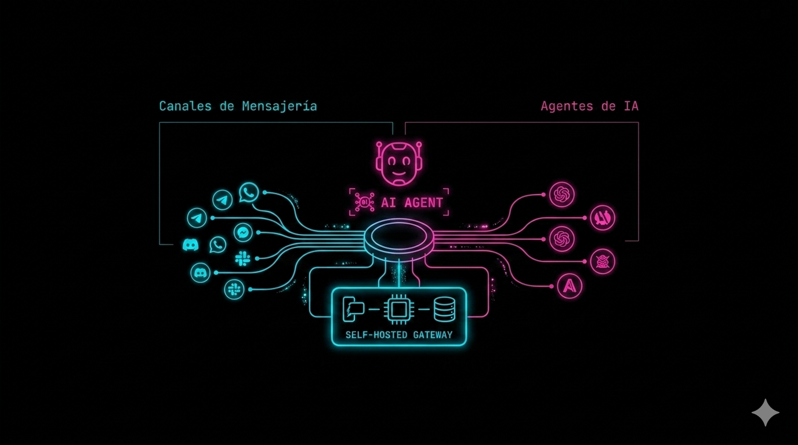
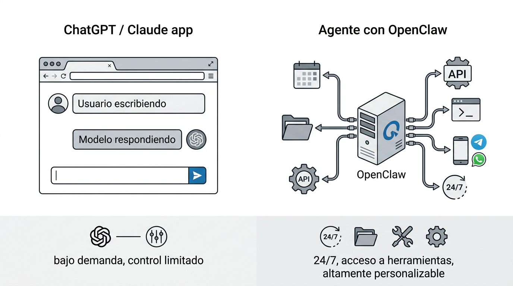

1/30

FLISoL / Medellín / 2026
// TALK_01
> ./openclaw --init

Gateway open source para agentes de IA
en todos los canales que ya usas.
en todos los canales que ya usas.
Speaker
Diego Escobar
Especialista IA · Innovación · Transformación Digital
Session
30:00 · LIVE
// INTRO · Presentador
2 / 35
whoami
$ cat /profile/name
Diego Escobar
$ cat /profile/role
Especialista en Inteligencia Artificial
Innovación & Transformación Digital
AI Systems
Multi-Agent
Automation
Open Source
// INTRO · Roadmap
3 / 35
cat agenda.md
01
El problema
Por qué los asistentes actuales no nos sirven
~7 MIN
02
La solución · OpenClaw
El arnés, arquitectura, canales, agentes y seguridad
~10 MIN
03
Demo en vivo
Equipo de agentes especializados sobre Telegram
~7 MIN
04
Diseña tu agente
Del rol humano al agente autónomo · casos reales
~5 MIN
05
Cómo contribuir · Q&A
La comunidad te está esperando
~5 MIN
// HISTORIA · Origen
4 / 35
git log --origin
// UN PROYECTO DE FIN DE SEMANA
Creado por Peter Steinberger,
programador austriaco.
programador austriaco.
En noviembre de 2025 lanza Clawdbot por diversión: un derivado de su proyecto "Clawd", nombrado en referencia al chatbot Claude de Anthropic.
La idea era simple: conectar mensajería con IA, sin depender de la nube. Lo que empezó como un experimento terminó destapando una categoría entera.

Peter Steinberger
Austria · @steipete
COMMIT 0
origin: Austria
date: Nov 2025
seed: Clawd → Clawdbot
ref: Claude · Anthropic
license: MIT
// HISTORIA · Naming
5 / 35
git log --names
Tres nombres en menos de tres meses.
El proyecto tuvo que mudar de piel dos veces antes de encontrar su identidad.
NOV · 2025
Clawdbot
Lanzamiento original. Un proyecto personal sin mayor pretensión.
27 ENE · 2026
Moltbot
Anthropic reclama el nombre. Cambio forzado — pero "Moltbot nunca sonó bien".
30 ENE · 2026
OpenClaw
El nombre definitivo. Tema langosta: muda · garra · libre.
// HISTORIA · Viral growth & fundación
6 / 35
git log --stats
De 0 a 350.000 ⭐
en 4 meses.
en 4 meses.
Viral global. Contribuidores de todo el mundo en semanas. Una categoría nueva, destapada.
14 FEB · 2026 · EL GIRO
Steinberger → OpenAI.
Fundación sin fines de lucro toma el control. Sigue MIT.
// TIMELINE
NOV 2025
Lanzamiento
ENE 2026
+100K ⭐
14 FEB 2026
→ OpenAI · fundación
ABR 2026
+350K ⭐ viral
[ PART · 01 ]
> load problem.exe
El problema
Por qué los asistentes actuales no nos sirven
// PROBLEMA · Overhead operativo
8 / 35
ps aux | grep tareas_repetitivas
Vivimos respondiendo lo mismo, en canales distintos.
WhatsApp, Telegram, Slack, Discord, correo. Cada uno con su propia silla, su propio contexto, su propio tono. El trabajo no escala.
PROCESS LIST
PID CMD
2041 responder_whatsapp
2042 atender_telegram
2043 reporte_slack
2044 soporte_discord
2045 mail_interno
... × cada día
// PROBLEMA · El costo real
9 / 35
echo $OVERHEAD
30–40%
Del tiempo productivo
se pierde en tareas repetitivas o de bajo valor.
Responder consultas recurrentes, consolidar información entre sistemas, coordinar por múltiples canales. Esa fuga es la razón por la que queremos automatizar con IA.
fuente · estudios McKinsey / Gartner / Asana 2023–2024
// PROBLEMA · Vendor lock-in
10 / 35
ls /dev/assistants
Las opciones comerciales son potentes — pero vienen con tres candados:
01 · ECOSYSTEM
🔒
Atado a un stack
Copilot → Microsoft. Einstein → Salesforce. Cambias de suite, pierdes el asistente.
02 · DATA EXFIL
↗
Tus datos, sus servidores
Cada mensaje, archivo y conversación viaja a un tercero. Tú ya no mandas.
03 · COST
$
Cada integración cuesta
Seats, add-ons, conectores premium. Escalas y la factura explota.
// PROBLEMA · Privacidad & compliance
11 / 35
cat /var/log/privacidad.log
Cuando conectas un asistente comercial a tu canal corporativo…
…le estás entregando mensajes, archivos y contactos a un tercero. Para equipos en salud, finanzas, legal o público, eso no es solo filosofía: es incumplimiento.
◆ Ley 1581 de 2012 · Colombia
◆ GDPR · Unión Europea
◆ HIPAA · Salud / PCI-DSS · Finanzas
AUDIT.LOG
[12:04:22] OUT msg_whatsapp → vendor.ai
[12:04:23] OUT file_contract.pdf → vendor.ai
[12:04:24] OUT customer_db → vendor.ai
[12:04:25] OUT internal_chat → vendor.ai
WARN: 2,481 msgs out today
WARN: retention_policy = unknown
// PROBLEMA · El hueco del mercado
12 / 35
compare --tools
| Herramienta | Open source | Self-hosted | Multi-canal | Agent-native |
|---|---|---|---|---|
| Zapier / Make | ✗ | ✗ | ~ | ✗ |
| n8n | ✓ | ✓ | ~ | ✗ |
| Intercom Fin / Drift | ✗ | ✗ | ~ | ✓ |
| Copilot / Einstein | ✗ | ✗ | ✗ | ✓ |
| Botpress · self-host | ~ | ✓ | ✓ | ~ |
| OpenClaw | ✓ MIT | ✓ | ✓ 10+ | ✓ |
// PROBLEMA · Lo que debería existir
13 / 35
require:
01
open-source
// código auditable
02
&& self-hosted
// tus datos, tu máquina
03
&& multi-channel
// WhatsApp · Telegram · Slack · Discord · …
04
&& agent-native
// multi-agente, memoria, tools
// los 4 juntos — eso es lo raro.
[ PART · 02 ]
> ./openclaw --start
La solución
Arquitectura, canales y agentes en un solo gateway
// OPENCLAW · Definición
15 / 35
./openclaw --help
Un gateway self-hosted que conecta tus apps de mensajería con agentes de IA.
⭐
350K+
GITHUB STARS
📦
1M+
NPM DOWNLOADS
🌍
150+
CONTRIBUTORS

MIT
Licencia abierta. Auditable, forkable, libre.
1 proceso
Un Gateway sirve todos los canales simultáneamente.
Tu hardware
Corre en tu laptop, servidor o VPS. Tú decides.
Agent-native
Diseñado para agentes de IA, no adaptado.
// OPENCLAW · El Arnés
16 / 35
cat arnes.md
Traductor entre el rendimiento bruto del modelo y las aplicaciones del mundo real.
MODELO BRUTO
Claude
GPT
Gemini
Llama local
▶▶
EL ARNÉS
OpenClaw
◇ Memoria
◇ Herramientas
◇ Automatización
◇ Canales
▶▶
MUNDO REAL
WhatsApp · Telegram
APIs internas
CRM · ERP
Terminal · Scripts
// CONCEPTO EN ACCIÓN

// OPENCLAW · Arquitectura & Canales
17 / 35
architecture --channels --show
CHANNELS
WhatsApp
Telegram
Discord
Slack
iMessage
Signal
MS Teams
Matrix · Zalo…
▶▶
CORE GATEWAY
OpenClaw
Gateway
◇ Sessions · Routing · Auth
◇ Memory · Tools · Plugins
◇ Web UI · Mobile nodes
+ plugins: Nostr · Twitch · WebChat embebible
▶▶
AGENTS & MODELS
Claude / GPT / Gemini
Llama · self-hosted
Agent · Ventas
Agent · Soporte
Agent · Ops
Custom tools
tu propio agente
// OPENCLAW · Multi-agent routing
18 / 35
agents --multi
Un gateway, muchos agentes.
Sesiones aisladas por agente, workspace o remitente. Cada agente con su propio contexto, memoria y herramientas. Sin fugas cruzadas entre clientes o equipos.
◆ Memoria persistente por sesión
◆ Reglas de enrutamiento declarativas
◆ Modelos distintos por agente
◆ Handoff entre agentes
CORE
Viky
orquestadora
● ATENA
● HERMES
● APOLO
● ARES
● POSEIDÓN
● ORFEO
// OPENCLAW · Anatomía del agente
19 / 35
ls ~/agent/
identity.md
Identidad
Nombre, rol, tono, estilo. Quién es el agente.
user.md
Usuario
Quién eres tú. Contexto, bio, forma de comunicarte.
soul.md
Alma
Propósito profundo, valores, límites y filosofía del agente.
agent.md
Operación
Manual operativo: fases de trabajo, prioridades, reglas diarias.
tools.md
Herramientas
APIs externas, MCPs, scripts, terminal. Cómo y cuándo usar cada herramienta.
herbit.md · cron
Hábitos
El agente "se despierta", evalúa condiciones y actúa por iniciativa propia.
// OPENCLAW · Comparativa
20 / 35
diff chatgpt openclaw
| Aspecto | ChatGPT / Claude app | OpenClaw |
|---|---|---|
| Modelo | Cerrado en la plataforma | Tú eliges: Anthropic, OpenAI, Gemini, local |
| Ejecución | Solo cuando chateas | 24/7 · tareas en segundo plano |
| Acceso al sistema | Sandbox limitado | Archivos, terminal, APIs internas |
| Propiedad de datos | Servidores del proveedor | Tu máquina · tu VPS · tus reglas |
| Personalización | GPTs / instructions limitadas | Identidad, alma, procesos, hábitos |
| Licencia | Cerrado · SaaS | MIT · código abierto |
// OPENCLAW · Tools & plugins
21 / 35
tools --plugins --sdk
Extensible por diseño. Si algo no existe, lo construyes.
MODELS
Multi-proveedor
Anthropic, OpenAI, Google, Llama local.
MEDIA
Imágenes · Audio
Gateway multimodal nativo.
NODES
iOS / Android
Canvas, cámara, voz.
TOOLS
Function calling
CRM, ERP, APIs internas.
WEB UI
Dashboard
Chat, sesiones, nodos.
PLUGINS
SDK de canal
Nostr, Zalo, tu canal.
// CLAUDE AGENT SDK
Agent SDK
SDK oficial de Anthropic para construir agentes personalizados que OpenClaw puede orquestar.
◆ Tool use nativo
◆ Subagentes anidados
◆ Prompt caching integrado
◆ Todos los modelos Claude
npm i @anthropic-ai/sdk
const client = new Anthropic()
await client.tools.run("my_tool")
// OPENCLAW · Quickstart
22 / 35
install openclaw
Tres comandos. Cinco minutos.
# 1 · instalar el paquete
$ npm install -g openclaw@latest
# 2 · onboarding + daemon del sistema
$ openclaw onboard --install-daemon
# 3 · abrir el dashboard (http://127.0.0.1:18789)
$ openclaw dashboard
✓ Gateway up — ready for channels
// VPS ONE-CLICK DEPLOY
Instalar en VPS
Corre OpenClaw en la nube con un solo script:
# Ubuntu / Debian server
$ curl -fsSL install.openclaw.ai | bash
✓ OpenClaw running on :18789
PROVEEDORES COMPATIBLES
◆ DigitalOcean
◆ Hetzner
◆ Render
◆ Railway
→ docs.openclaw.ai/vps
// OPENCLAW · Security & control
23 / 35
security --review
100%
Self-hosted · tus datos nunca salen
MIT
Código auditable línea por línea
ALLOWLIST
Controla quién habla al bot
channels.whatsapp.allowFrom: ["+57 321…"]
MENTION RULES
En grupos, solo responde si te mencionan
groups: { "*": { requireMention: true } }
REMOTE ACCESS
Tailscale · SSH · tu red
Sin exponer puertos públicos. Cero attack surface.
[ PART · 03 ]
> ./demo --start
Demo en vivo
Equipo de agentes especializados sobre Telegram
// DEMO · Caso de uso
25 / 35
scenario --describe
Un bot de Telegram que orquesta un panteón de agentes.
Un solo chat, seis especialistas detrás. ATENA diseña sistemas, HERMES automatiza, APOLO crea marketing, ARES cierra ventas, POSEIDÓN analiza negocio, ORFEO produce contenido.
Telegram
6 agentes
Sonnet + Haiku 4.5
Self-hosted
OC
OpenClaw · equipo
● 6 agentes en línea
Telegram
Necesito una campaña para el lanzamiento del nuevo plan Pro.
↳ route → APOLO (marketing)
APOLO · Marketing
Propongo funnel en 3 fases: teaser orgánico → paid Meta/Google → nurture email. ¿Te armo el brief?
Propongo funnel en 3 fases: teaser orgánico → paid Meta/Google → nurture email. ¿Te armo el brief?
Sí, y coordínalo con contenido y ventas.
↳ handoff → ORFEO · ARES
ORFEO · Contenido
Listo. 4 posts + 1 video corto + landing. Primer draft en 20 min.
Listo. 4 posts + 1 video corto + landing. Primer draft en 20 min.
// DEMO · Configuración del equipo
26 / 35
cat agents/team.yaml
# team.yaml · panteón de agentes
channel: telegram
orchestrator: viky # la que decide
agents:
- name: ATENA # arquitecto
model: sonnet-4.5 timeout: 3600s
- name: HERMES # automatización
model: haiku-4.5 timeout: 1800s
- name: APOLO # marketing
model: haiku-4.5 timeout: 1800s
- name: ARES # sales closer
model: haiku-4.5 timeout: 1800s
- name: POSEIDÓN # negocio
model: sonnet-4.5 timeout: 2400s
- name: ORFEO # contenido
model: haiku-4.5 timeout: 1800s
✓ 6 agents · Config OK
// VIKY + EL PANTEÓN
●ATENA· Arquitecto de sistemas
Diseño técnico · decisiones de stack · revisiones
●HERMES· Automatización
Workflows · integraciones · scripts · RPA
●APOLO· Marketing
Campañas · copy · funnels · análisis creativo
●ARES· Sales closer
Cierre · objeciones · negociación · follow-up
●POSEIDÓN· Negocio
Estrategia · P&L · unit economics · decisiones
●ORFEO· Contenido
Posts · videos · guiones · creatividad editorial
// DEMO · Flujo de mensaje
27 / 35
trace --message
01
Telegram
"campaña del plan Pro"
02
Gateway
sesión · auth
03
Viky
intent → APOLO
04
APOLO + ORFEO
handoff colaborativo
05
Respuesta
vía Telegram
[12:04:22] gateway < telegram:@diego "campaña plan Pro"
[12:04:22] viky intent="marketing_launch" → route(APOLO)
[12:04:23] APOLO plan="3-phase funnel" · handoff(ORFEO, ARES)
[12:04:24] ORFEO → { posts: 4, video: 1, landing: 1 }
[12:04:25] gateway > telegram:@diego "Funnel + assets listos en 20 min…"
// DEMO · Resultado
28 / 35
./demo --result
1
Bot de Telegram
6
Agentes del panteón
∞
Conversaciones concurrentes
0
Datos que salen del servidor
Todo corriendo en mi infraestructura. Esto lo construyes esta semana.
[ PART · 04 ]
> ./agent --design
Diseña tu agente
Del rol humano al agente autónomo
// DISEÑA · Proceso
30 / 35
./agent --blueprint
01
Define el rol
¿Qué puesto de tu equipo quieres replicar? Coordinador, PM, soporte, gestor de campañas.
02
Mapea el proceso
¿Qué entradas recibe? ¿Qué pasos sigue? ¿Qué decisiones toma? ¿Qué entregables produce?
03
Traduce a archivos
identity · soul · agent · tools · herbit/cron
04
Itera con IA
Usa Claude, Gemini o Perplexity para proponer borradores de soul, agent y tools. Tú los revisas.
// DISEÑA · Casos reales
31 / 35
ls ~/casos/
CASO 01
Equipo virtual en VPS
ATENA — Desarrollador Senior
HERMES — Automatización
APOLO — Marketing
+ ARES · POSEIDÓN · ORFEO
Un coordinador orquesta a todos. Cada uno con su modelo y herramientas.
CASO 02
Asistente personal auto-hospedado
◆ VPS + Docker + Ubuntu
◆ Claude Haiku / Sonnet / Opus
◆ Modo ingeniero: debug, consola
◆ Carga docs, código, bases de datos
Tu IA personal con acceso completo a tu infraestructura.
CASO 03
Seguimiento de equipos
◆ Revisa tareas del equipo
◆ Resúmenes diarios por Telegram
◆ Señala bloqueos y retrasos
◆ Escala decisiones al líder
El PM que nunca duerme y siempre tiene el contexto completo.
[ PART · 05 ]
> ./community --join
Comunidad
Cómo contribuir · recursos · Q&A
// COMUNIDAD · Cómo contribuir
33 / 35
contribute --how
El software libre lo construimos entre todos. Todas las contribuciones cuentan.
🧪
01 · USE
Probar & reportar
Instala, usa, rompe. Abre issues cuando algo falle. Cada bug documentado vale oro.
🔌
02 · BUILD
Construir plugins
Hay canales LATAM sin plugin aún. Bold, Nequi, Rappi-chat. Oportunidad clara.
📝
03 · DOCS
Documentar casos
Escribe tu use-case. Traduce al español. Graba tutoriales. Educa a la comunidad.
💬
04 · HELP
Discord & foros
Responde a otros constructores. La comunidad se sostiene así.
📢
05 · SHARE
Contar en tu red
Un tweet, un post, una demo en tu empresa. Amplifica el proyecto.
⌨️
06 · CODE
Pull requests
Good-first-issues abiertos en GitHub. Empieza pequeño, crece con el proyecto.
// COMUNIDAD · Links & recursos
34 / 35
resources --links
◇
DOCS
docs.openclaw.ai
Guía completa de instalación, configuración y referencia CLI.
◆
CODE
github.com/openclaw/openclaw
Repositorio MIT. Issues, releases, roadmap y código fuente.
▲
CHAT
discord.com/invite/clawd
Discord oficial — hispanohablantes bienvenidos. Preguntas, showcase, ayuda.
●
CONTACT
Diego Escobar · Especialista IA
Para casos de uso corporativos e implementaciones concretas.
> ./flisol --thanks
Gracias.
Preguntas, demos adicionales, implementaciones —
conversamos ahora mismo.
conversamos ahora mismo.
Q&A
Demo en vivo
Contacto directo
FLISoL · Medellín 2026
docs.openclaw.ai